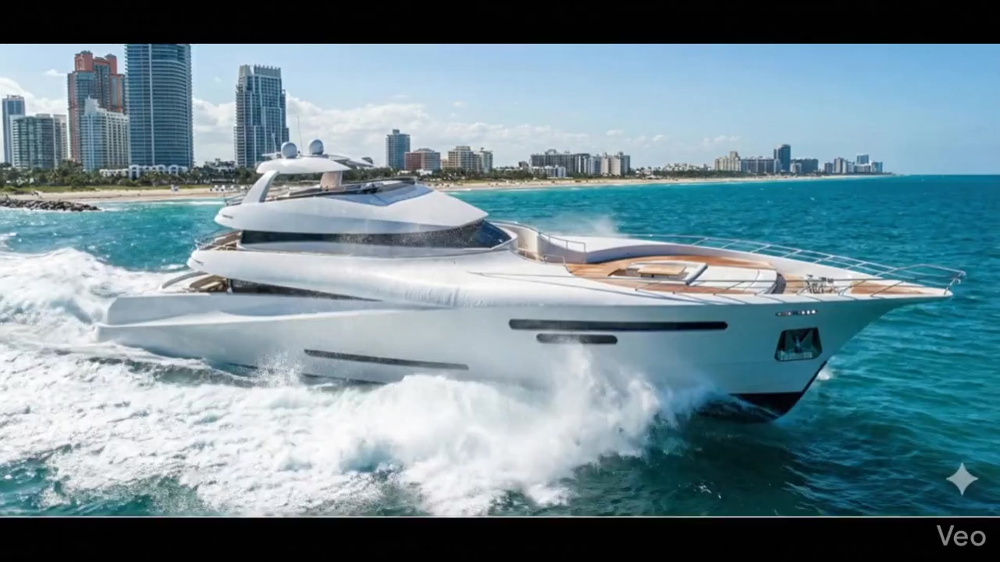

02 / La Dolce Vita · L'Arte di Vivere
La Dolce Vita
Life, Beautifully Lived
Il piacere di vivere. Unhurried days, extraordinary places and life on the water.
La Dolce Vita / 01
Il Tempo
The Luxury of Time
Il tempo is perhaps the greatest luxury. The freedom to follow the light, stay for one more conversation or choose the longer route home. In the Italian understanding of la dolce vita, time is not simply spent: it is enjoyed, generously and beautifully.
La Dolce Vita / 02
Il Piacere di Navigare
The Joy of the Journey
The pleasure of a passeggiata on the water has little to do with distance. It is the changing view, the sound of the lake and the quiet sense of being exactly where one wants to be. Il piacere di navigare belongs to the experience, not to a number on a specification sheet.
La Dolce Vita / 03
Eleganza Senza Ostentazione
Effortless Elegance
Eleganza senza ostentazione. True Italian elegance does not need to announce itself. It lives in proportion, hospitality, a confident gesture and the art of choosing just enough. A beautiful boat should share that same natural sprezzatura: a sense of ease made possible by careful thought.
La Dolce Vita / 04
La Vita a Bordo
Moments Worth Keeping
La vita a bordo begins with the people who share it. A quiet corner in the sun, the pleasure of an aperitivo, space for conversation and the freedom to be alone when desired. These moments give direction to a design long before its final arrangements are defined.
La Dolce Vita / 05
La Collezione
The Pleasure of Discovery
A collection is an expression of character, not simply of size or category. The eight VELLARIO design studies are different invitations to experience the water. Discover the distinct intentions behind Quantum 999, MAS 36, MAS 52, MAS 56, Lariocab, FY70, GranTender 72 and Gran Marlin.
ESPLORA La Collezione